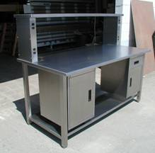
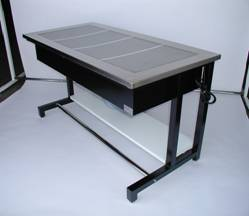
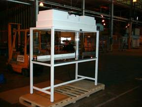
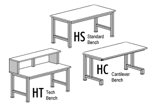
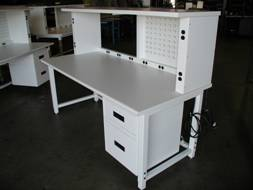

| E.S.D. - CLEAN ROOM - MODULAR - LABORATORY | |||
|  |  |  | |
| Our Workstations feature Quality Construction and Design Simplicity in a Fully Welded Frame Bench. Choose from Three (3) basic frame styles and add options to meet your specific needs --- | |||
|  | |||
| Standard Sizes (Inches) | |||
| Width | Length | Height | |
| 30 | 48 | 30 | |
| 32 | 60 | 32 | |
| 34 | 72 | 34 | |
| 36 | 84 | 35 | |
| 48 | 96 | 36 | |
| Order any combination of the above. Other sizes available upon request. Knock Down Benches Also Available | |||
|  | |||